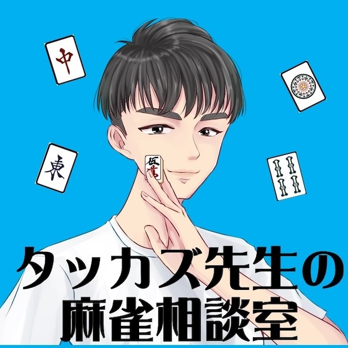

PROFILE
最高位戦日本プロ麻雀協会所属のプロ雀士。
「伝える力」で、あなたの麻雀を本質から変えます。

MAHJONG PRO / INSTRUCTOR
CAREER
プロ同士の勉強会で常に研鑽を積み、最新の知見を指導に反映。競技麻雀の最前線で培った実戦力を指導に活かす。
論理的思考力と高い言語化能力を強みとする。「なぜそうするか」を徹底的に言語化した指導スタイルの基盤。
分析力・構造化能力を麻雀指導にも活用。複雑な打牌判断をシンプルに整理して伝える。
指導力・分かりやすい説明力を培った。"なぜそうするか"を徹底的に言語化する指導スタイルの原点。
PHILOSOPHY
SNS / LINKS